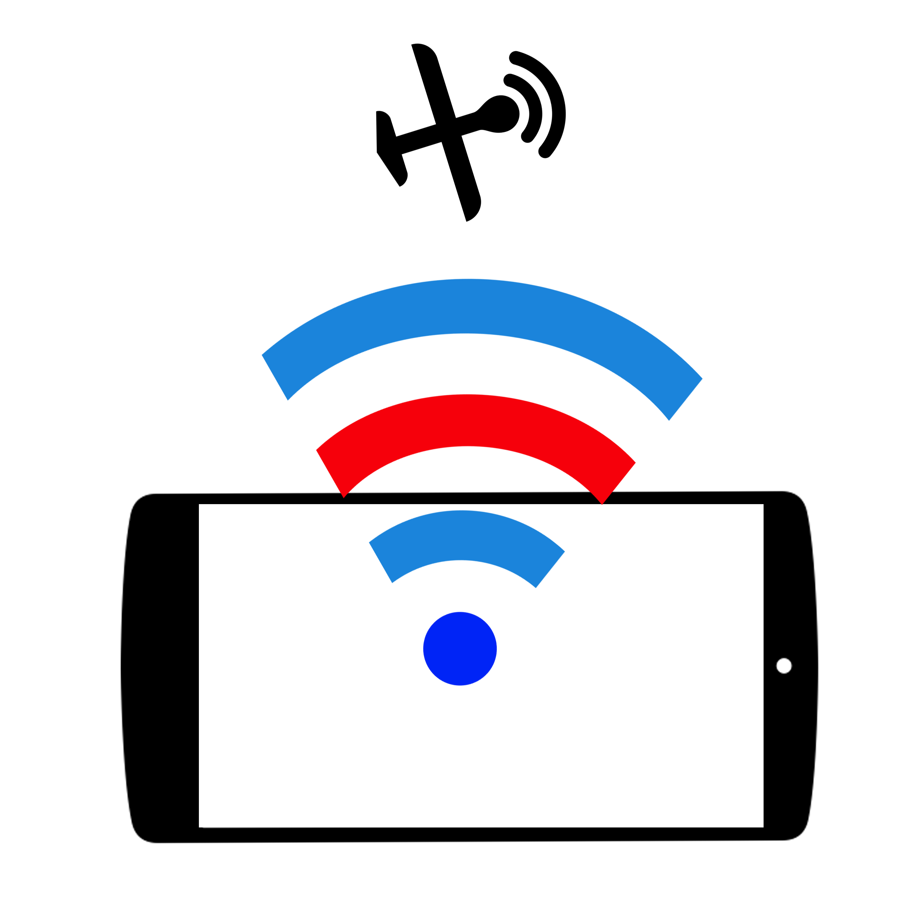
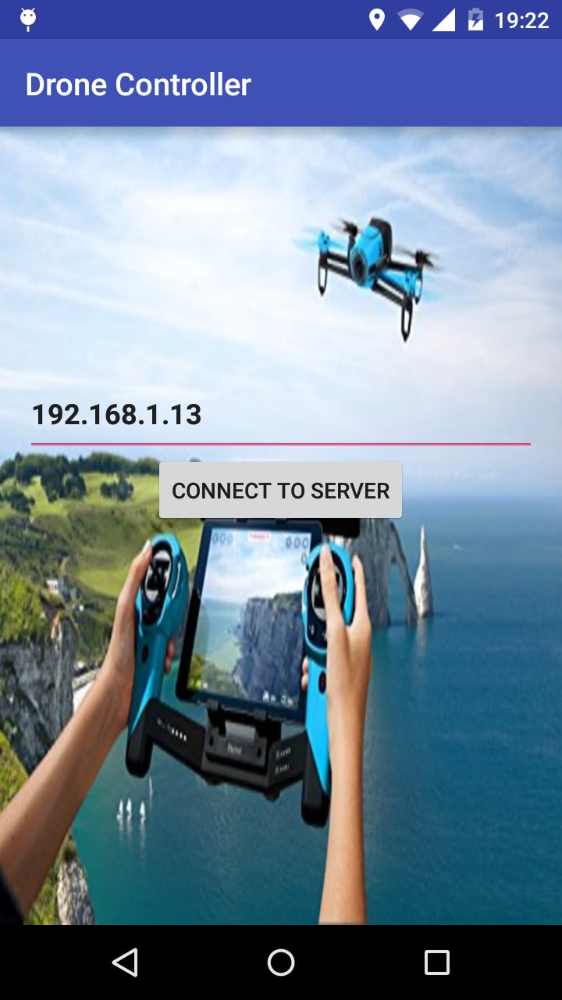
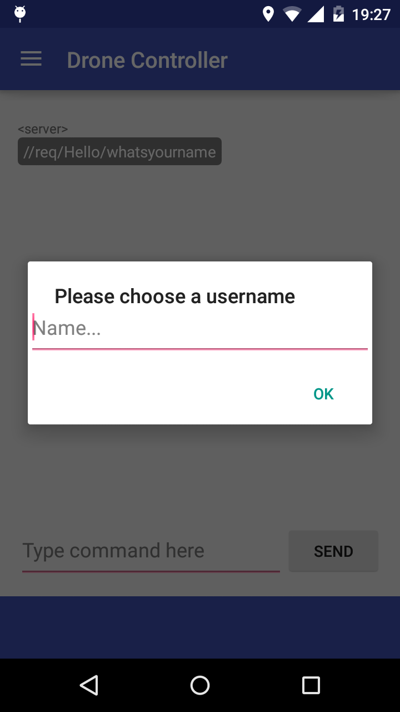
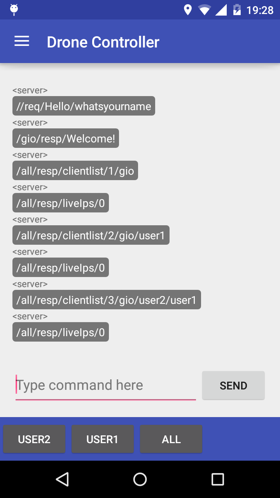
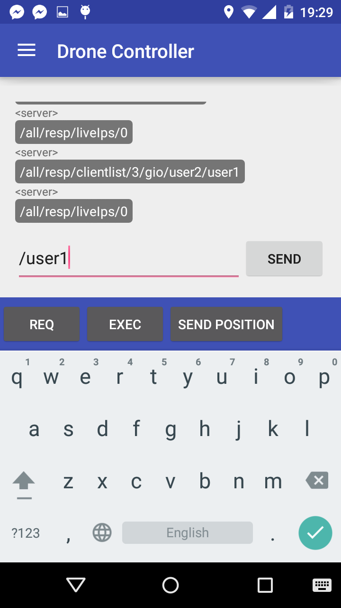
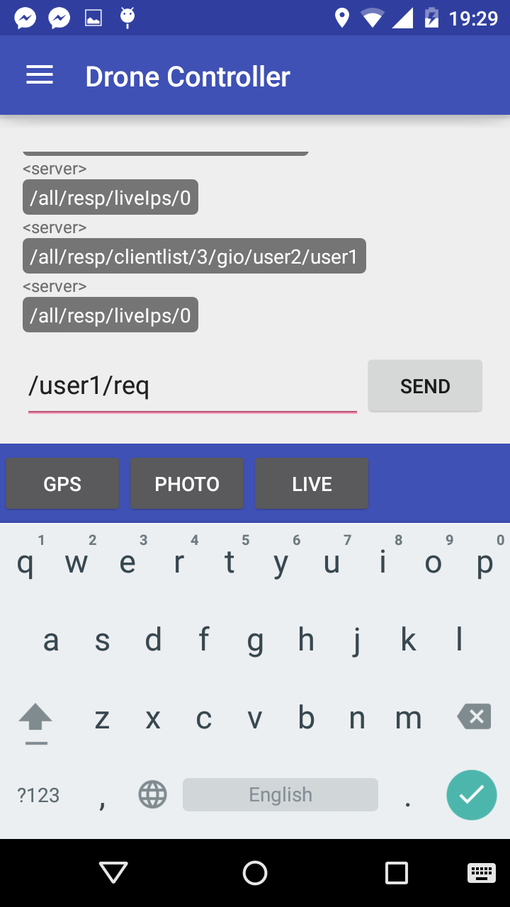

 Drone Controller
University project for MobServ class at Eurecom.
The purpose of the project is to build a client-server application that allows to send remote commands between Android devices, having one (or more) of them onboard on drones. The server is a simple chat server in Python/Twisted, and the client is an Android app that sends/receives messages and performs actions described there.
Supported features so far are requests of gps position, photo shooting and live streaming.
Potential new features include a remote pilot for the drones.
How to install
In order to use the application, download the code and compile it using Android Studio.
For the server, python and the Twisted protocol are required. To launch the server use command
$ python server.py
When the server is up and running it will show the ip address to insert in the application.
How to use
In order to use the application you need to run the server. The server will provide you with an ip address, which you need to insert into the first page of the app and click connect to the server. Once you are connected you can choose a name, if you choose a name already taken you will be asked to provide a different one.
Now you can start sending requests, ask for periodic messages or send your own position.
You do this by first choosing the name of the device you want to recive data from, or choosing to recive from all. Next choose what the request is, if it is a request for reciving the gps position, a picture or stream video. Then send the request by clicking send.
You can also send more requests at the same time, you do this by choosing ; after the choosen request. Then you continue by choosing the devise as before.
You can also send your own position by choosing send position after choosing a devise to send to.
Protocol syntax
The syntaxt of the messages beeing sent over the server is of the form
/recipient_user/command/action/params/moreparams
The recipient_user field is used for the username of the user the command is beeing sent to. recipient_user can also be set to all in case of broadcast.
The command field is used for commands, like requests (Req), responses or execute (Exec).
The action field is used for the specific action of the command. E.g. Gps, Photo, Live stream or Network.
The params and moreparams field is used for any parameters that the action migth need. This field will be specific for every different action.
The server forward the message m by sending “< sendername >, m” to the recipient, where sendername is the name of the message sender.
Examples of messages:
< user3 >
/user1/req/photo
Here user3 requests a photo from user1
< server >
/all/resp/clientlist/2/user1/user3
Here the server broadcast the clientlist
Features
Already implemented
Supported features so far are
- Properly connect/disconnect from the server
- Proper interpretation of server messages
- Easy message composability/suggestions
- List of connected users
- Ask/send GPS coordinates in plaintext
- Show received GPS position on a map
- Send GPS position through clicking on a map
- Ask/Send pictures to/from other clients
- Save received pictures to memory
- Save received pictures in app gallery
- Stream video
- Log activity to file
Ideas on features that can be added
A potential new feature that can be implemented is the ability to interact with the drone API. Making it possible to control the drone with your android device, sending commands for it to e.g. move left, right, up, down, etc. There is also a possibility to implement the possibility to send a position by clicking on the map, making the drone fly to the given position.
Another feature that can be added include event-based subscription for batch commands.
There is also the possibility to implement a request for data from various sensors, e.g. a humidity or temperature sensor connected to the application. You will then be able to monitor the environment where the sensors are located, if the sensors allow it, it is possible to implement a command to change e.g. the temperature.
How to implement new features
In order to implement new features you just need to add a new case in the switch case for messageIsReq() and messageIsResp(). If you want to implement a new feature which need to deal with the GUI, you need to add a callback and implement it in the activity in charge of the GUI.
If you want to, you can also rewrite the GUI. You do this by rewriting the class ChatActivity.
License
Apache License, Version 2.0, January 2004
http://www.apache.org/licenses/
Screenshots
    Support
If you are having issues, please let us know by posting an issue on this github page.